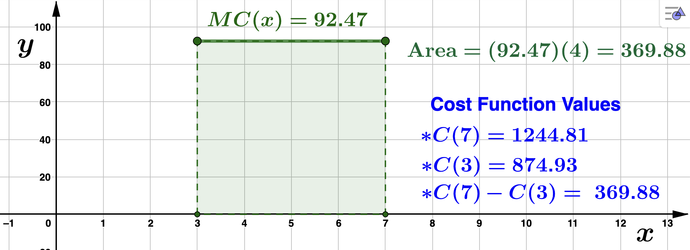
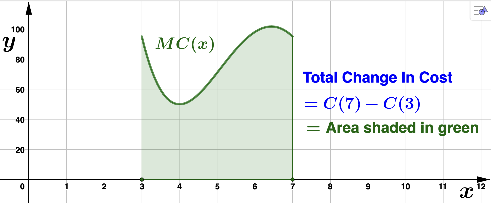
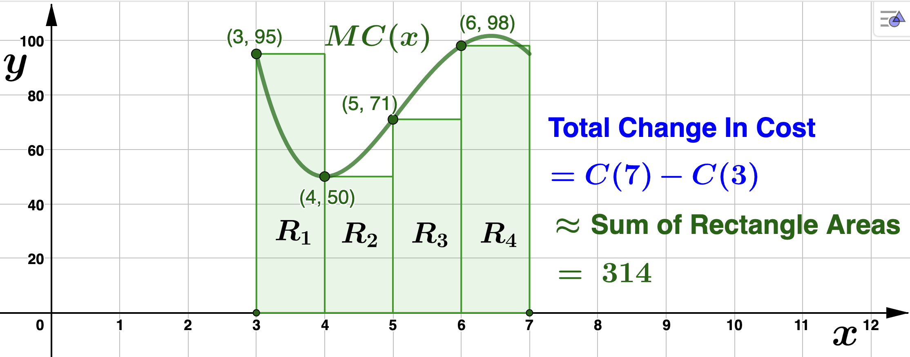
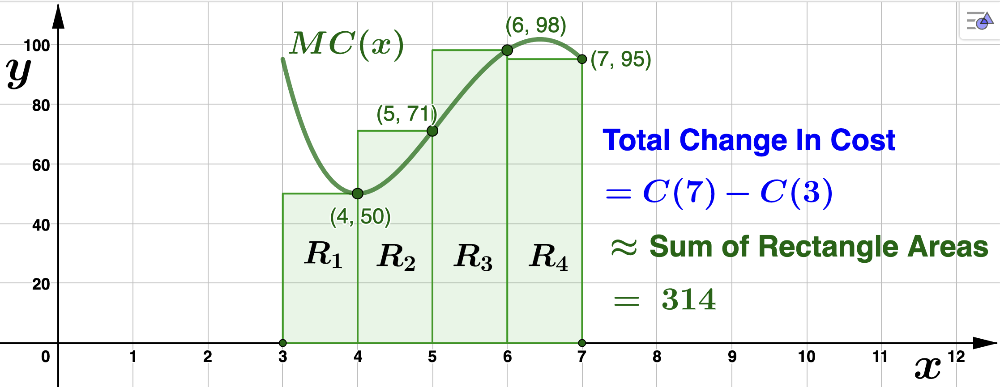
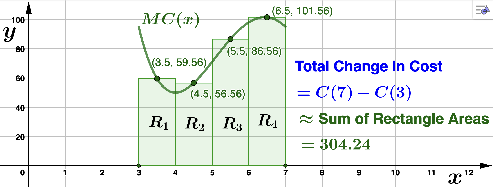
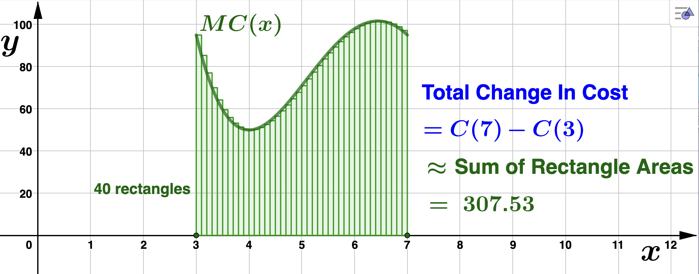
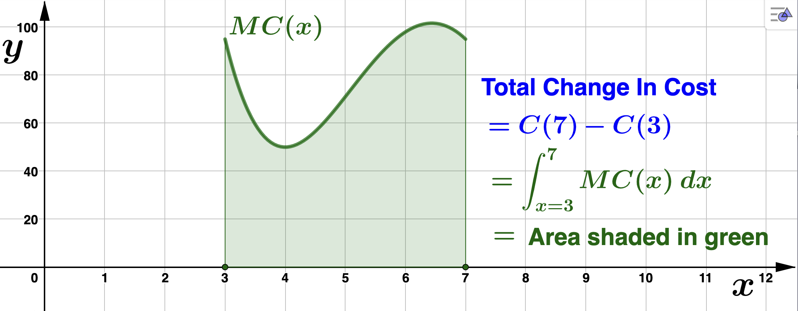

Section 4.2 Area And The Definite Integral
We now explore the application of area to solving problems involving the total change (or net change or total accumulation) in a function. Recall Example 4.1.5, in which Farbman's cost, \(C(x)\text{,}\) was increasing at a constant rate of $92.47 per additional unit manufactured (\(MC(x) = 92.47\)). We found the cost function to be \(C(x) = 92.47x + 597.52\) so that the total, or net, change in cost the company incurs between the third and seventh dresser they manufacture is \(C(7) - C(3) = 369.88\text{,}\) or $369.88. Notice the region under the marginal cost function over the interval \([3,7]\) forms a rectangle of height 92.47 and width of 4. So, the area of this region is \((92.47)(4) = 369.88\text{.}\)

In the picture above, the region under \(MC(x)\) is a rectangle, and so we have a nice formula to calculate the area. Of course, the above fact is also true for more complicated curves. Suppose instead that Farbman's marginal cost is given to be
\begin{equation*}
MC(x) = x^4 - 28x^3 + 272x^2 - 1088x + 1586.
\end{equation*}
and again we want to know the total change in cost between the third and seventh dresser. That is, we want to know \(C(7) - C(3)\text{.}\) Fact 4.2.1 tells us
\begin{equation*}
C(7) - C(3) = \textrm{Area under} \: MC(x) \: \textrm{from} \: x=3 \: \textrm{to}\: x=7
\end{equation*}

So, how do we calculate this area? Well, we know how to calculate the area of rectangles, so let's start there.
Left Endpoint Approximation

In the above picture, the interval \([3,7]\) is divided into 4 smaller intervals, called subintervals, the length of each being 1 unit. This is the width of each rectangle, \(R_i\) for \(1 \leq i \leq 4\text{.}\) Notice that for the height of each rectangle \(R_i\) we used the marginal cost value at the left endpoint of each of the 4 smaller intervals. If \(A_i\) denotes the area of \(R_i\) for \(1 \leq i \leq 4\text{,}\) then
- \(\displaystyle A_1 = 1 \cdot MC(3) = MC(3) = 95\)
- \(\displaystyle A_2 = 1 \cdot MP(4) = MC(4) = 50\)
- \(\displaystyle A_3 = 1 \cdot MP(5) = MC(5) = 71\)
- \(\displaystyle A_4 = 1 \cdot MP(6) = MC(6) = 98 \)
Now, the area under \(MC(x)\text{,}\) or in other words, the total change in cost \(C\) from \(x=3\) to \(x=7\) is approximately
\begin{align*}
\textrm{Total Change In} \: C \amp = C(7) - C(3) \\
\amp = \textrm{Area under} \: MC(x) \: \textrm{from} \: x=3 \: \textrm{to}\: x=7 \\
\amp \approx A_1 + A_2 + A_3 + A_4\\
\amp = 95 + 50 + 71 + 98\\
\amp = 314.
\end{align*}
It is worthwhile pointing out here that the choice to use the left endpoints of the subintervals to form our rectangles was arbitrary. We could have have evaluated the marginal cost function at any number we like within each subinterval to determine the height of the rectangles. We also could have arbitrarily chosen the width of each rectanlge. Below are two more illustrations using the right endpoint and midpoint of each interval to determine the height.
Right Endpoint Approximation

Midpoint Approxmiation

That the left and right endpoint approximations are the same is coincidence. Most often, choosing different test points to determine the height of the approximating rectangles will give different area approximations. Regardless, we can make these approximations better and better by continuing to increase the number of inscribed rectangles. The sum of the areas of these approximating rectangles is referred to as a Riemann Sum. Look how close we can approximate the acutal area using only 40 rectangles. This, of course, provides a better approximaition of the total change in \(C(x)\text{.}\)

Letting \(A_i, 1 \leq i \leq 40\) denote the area of each rectangle, and using summation notation for the Riemann Sum,
\begin{equation*}
C(7) - C(3) \approx \sum_{i=1}^{40} A_i = A_1 + A_2 + A_3 + \cdots + A_{40} =307.53.
\end{equation*}
Let \(n\) represent the number of rectangles we use. Then the Riemann Sum has the form
\begin{equation*}
\sum_{i=1}^{n} A_i.
\end{equation*}
The actual area under the graph of \(MC(x)\) is the LIMIT of the Riemann Sums as \(n \to \infty\text{.}\) Again, recalling Fact 4.2.1
\begin{equation*}
C(7)-C(3) = \textrm{Area under} \: MC(x) \: \textrm{from} \: x=3 \: \textrm{to}\: x=7 = \lim_{n \to \infty} \sum_{i=1}^{n} A_i.
\end{equation*}
We have a special notation for the limit above. The symbol \(\displaystyle \int_{x=3}^{7} MC(x) \: dx\) is used for the above limit, and is referred to as a definite integral. The numbers 3 and 7 at the bottom and top of the integral symbol are called limits of integration. Substituting and rewriting, this becomes
\begin{equation*}
\displaystyle \int_{x=3}^{7} MC(x) \: dx = C(7)-C(3) = \textrm{Area under} \: MC(x) \: \textrm{from} \: x=3 \: \textrm{to}\: x=7
\end{equation*}

In the next section we will learn how to evaluate these definite integrals without having to calcuate a limit.